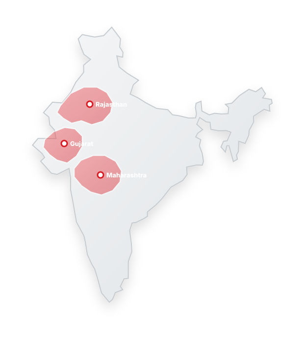

GUJARAT→
GUJARAT→▣ Hoardings Across Key Cities▣ Ahmedabad Bus Shelters▣ 3000+ Own Hoardings▣ Surat EV Buses▣ 2000+ Gujarat Sites▣ Unipoles & Gantries
View Gujarat Network →Our network brings together outdoor locations and transit environments across key markets, helping brands explore visibility where people live, work, travel and move every day.
Explore Media Availability →From major cities to growing regions, our network covers strategic locations across Western India, connecting brands with audiences in high-movement environments.
Click a key market to explore the media opportunities and movement environments around it.

Outdoor, transit and city-level opportunities built around where people actually move.
GUJARAT→ MUMBAI→
MUMBAI→ THANE→
THANE→ RAJASTHAN→
RAJASTHAN→One network across outdoor, transit and high-frequency environments — planned around audience movement and campaign objectives.
Hoardings, unipoles, gantries and premium city visibility.
OOHBuses, bus shelters and railway environments that move with audiences.
TRANSITStrategic markets across Gujarat, Mumbai, Thane and Rajasthan.
MARKETSMultiple formats connected through one coordinated media network.
REACH